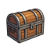

<!doctype html><html lang="en"><meta charset="utf-8"><meta name="viewport" content="width=device-width,initial-scale=1"><title>Everdeep · Idle Queue Scroll Handoff</title><style>
*{box-sizing:border-box}body{margin:0;background:radial-gradient(ellipse at top,#272623,#0b0c0d 70%);color:#d8d0ba;font:15px/1.5 Georgia,serif;--font-ui:Georgia,serif;--sk-thin:url('queue-skin-assets/frame.png');--sk-thin-sl:190}header,main{max-width:1280px;margin:auto;padding:24px}h1{font-weight:normal;margin:0;font-size:32px}p{color:#a8a499;margin:8px 0 18px}.eyebrow{font:11px system-ui;color:#c8a84b;letter-spacing:2px;text-transform:uppercase}button,select,textarea{font:inherit;color:#d8d0ba;background:#171715;border:1px solid #6a6556;padding:8px;cursor:pointer}button:focus-visible,select:focus-visible,textarea:focus-visible{outline:2px solid #dfbe77;outline-offset:3px}button:disabled{opacity:.4;cursor:default}button:hover:not(:disabled){filter:brightness(1.3)}.tabs{display:flex;gap:8px;flex-wrap:wrap;margin:20px 0}.tabs button{border:solid transparent;border-width:8px 20px;border-image:url('queue-skin-assets/button.png') 66 180 fill / 8px 20px stretch;padding:8px 10px;min-width:160px}.tabs button.on{color:#ffdd91;filter:brightness(1.4)}.tools{display:flex;gap:12px;flex-wrap:wrap;align-items:center;font:12px system-ui}.tools label{display:flex;gap:6px;align-items:center}.tools button,.tools select{font-size:12px}#desc{font-size:17px;color:#cfbd91;margin-bottom:18px}#idle-queue-box{width:100%!important;max-width:100%!important;max-height:none!important;overflow:visible!important;background:#100f0ee8!important;border:22px solid transparent!important;border-image:url('queue-skin-assets/frame.png') 190 fill / 22px stretch!important;border-radius:0!important;padding:20px!important;font-family:Georgia,serif!important;color:#d8d0ba!important;min-width:0}#idle-queue-box button{border:solid transparent!important;border-width:6px 15px!important;border-image:url('queue-skin-assets/button.png') 66 180 fill / 6px 15px stretch!important;border-radius:0!important;height:auto!important;width:auto!important;min-height:32px;padding:3px 8px!important;color:#d2c4a4!important;background-color:#161513!important;font-size:13px!important}#idle-queue-box button.iq-mini,#idle-queue-box button[title=remove]{border:1px solid #686052!important;border-image:none!important;min-width:27px;min-height:27px;padding:2px!important;background:#1c1a16!important}#idle-queue-box button[title=remove]{color:#bd8070!important}#idle-queue-box button[onclick*="startIdleQueue"]{color:#bcd3a4!important}#idle-queue-box button[onclick*="stopIdleQueue"]{color:#df9d83!important}#idle-queue-box select{max-width:150px!important;font-size:13px!important;padding:5px!important;background:#191916!important;color:#c9c2ab!important;border:1px solid #575748!important}#idle-queue-box .q-header{align-items:center!important;gap:10px;flex-wrap:wrap;border-bottom-color:#514b3e!important;padding-bottom:16px!important}#idle-queue-box .q-header>span:first-child{font-size:24px!important;color:#ddc88f!important}#idle-queue-box .q-row{border-radius:0!important;background:#191815!important;border-color:#4e493e!important;border-left:3px solid var(--type)!important;padding:12px!important;gap:9px!important;min-width:0}#idle-queue-box .q-row.active{background:linear-gradient(90deg,#393123,#1a1915)!important;box-shadow:inset 0 0 0 1px #b39b64}#idle-queue-box .q-name{font-size:15px!important;white-space:normal!important;overflow:visible!important;line-height:1.45}#idle-queue-box .q-transport{border-top-color:#514b3e!important;gap:14px!important;padding:18px 0 10px!important}#idle-queue-box .q-close{width:100%!important;margin-top:18px!important}#idle-queue-box .q-rewards{border-top-color:#514b3e!important;padding-top:18px!important}.q-number{display:none}.mode0 #idle-queue-box{max-width:850px!important;margin:auto}.mode1 #idle-queue-box{max-width:940px!important;margin:auto}.mode1 .q-row{margin-bottom:12px!important;padding:18px!important}.mode1 .q-number{display:grid;place-items:center;font-size:24px;color:#b49b64;min-width:35px}.mode1 .q-name{display:flex;flex-direction:column}.mode2 .q-list{display:grid;gap:0}.mode2 #idle-queue-box .q-row{margin:0!important;border-width:0 0 1px 3px!important;min-height:64px;background:#131311!important}.mode2 #idle-queue-box .q-row:nth-child(even){background:#201e19!important}.mode2 .q-number{display:block;min-width:26px;font:13px system-ui;color:#9b927b}.mode2 .q-list:before{content:'ORDER / ACTIVITY                                                 RUN SETTINGS';font:11px system-ui;letter-spacing:1px;color:#ada18a;padding:12px;background:#29261f}.mode3 #idle-queue-box{display:grid;grid-template-columns:minmax(0,1fr) 260px;gap:0 24px}.mode3 .q-header,.mode3 .q-map,.mode3 .q-close{grid-column:1/-1}.mode3 .q-transport{grid-column:2;grid-row:3;align-self:start;display:flex!important;flex-direction:column;align-items:stretch!important;background:#201c16;padding:20px!important;margin:0!important}.mode3 .q-transport>span{white-space:normal!important}.mode3 .q-rewards{grid-column:1/-1}.mode3 .q-row{flex-wrap:wrap}.mode3 .q-name{flex-basis:75%!important}.mode4 .q-list{display:grid;grid-template-columns:repeat(2,minmax(0,1fr));gap:12px;counter-reset:cards}.mode4 #idle-queue-box .q-row{display:flex!important;flex-wrap:wrap;margin:0!important;min-height:135px;padding:18px!important;align-content:center}.mode4 .q-number{display:block;color:#bb9f65;min-width:20px;font-size:22px}.mode4 .q-name{flex-basis:calc(100% - 70px)!important}.review{margin-top:24px;padding:20px;border:1px solid #494538;display:flex;gap:18px;flex-wrap:wrap;align-items:start}.review textarea{flex:1;min-width:240px;min-height:85px;cursor:text}#status{min-height:22px;color:#cdb481;font:13px system-ui;margin-top:14px}footer{font:12px/1.6 system-ui;color:#929187;margin-top:20px}.q-icon:after{content:'?'}@media(max-width:720px){header,main{padding:14px}#idle-queue-box{padding:12px!important;border-width:12px!important;border-image-width:12px!important}.q-row{flex-wrap:wrap}.q-name{flex-basis:70%!important}.q-header>span{flex-wrap:wrap}.mode3 #idle-queue-box{display:block}.mode4 .q-list{grid-template-columns:1fr}.mode2 .q-list:before{content:'RUN ORDER · SETTINGS BELOW EACH ACTIVITY'}.mode1 #idle-queue-box .q-row{padding:12px!important}.tabs button{min-width:calc(50% - 8px);font-size:12px}.q-transport>span{white-space:normal!important}.review textarea{min-width:100%;width:100%}}
</style><link rel="stylesheet" href="queue-scroll-skin/scroll.css"><header><div class="eyebrow">Everdeep · Existing queue, five visual treatments</div><h1>Idle Queue — reskins only</h1><p>Same run list, same controls. Based on the current live queue renderer.</p><nav class="tabs" id="tabs"></nav><div class="tools"><label>Preview state <select id="previewState" onchange="sample(this.value)"><option value="ready">Ready</option><option value="running">Running</option><option value="empty">Empty</option></select></label><button onclick="sample(document.getElementById('previewState').value)">Reset sample</button><button onclick="exportNotes()">Export design feedback</button><span>Preview controls above; game controls below.</span></div><div id="status" role="status"></div></header><main><div id="desc"></div><div id="idle-queue-box"></div><div class="review"><label>Preference <select id="rating" onchange="saveNotes()"><option>Undecided</option><option>Favorite</option><option>Keep elements</option><option>Reject</option></select></label><textarea id="notes" aria-label="Design notes" placeholder="What should we keep or change?" oninput="saveNotes()"></textarea></div><footer>Local presentation demo. Run labels, controls and estimated lap cost use the live renderer and helpers. Sample entries and rewards are illustrative. Combat, saving, the Expedition Map and reward choices stay in the real game; their buttons here identify the existing destination. No new farming goals or automatic conditions.</footer></main><script>
const designs=[['Refined original','The existing single-column window, with larger controls and readable spacing.'],['Numbered run cards','More room per run, stronger order markers and a warm highlight on the active entry.'],['Compact ledger','Dense alternating rows for longer queues, keeping each run’s settings together.'],['Control rail','The run list on the left; looping, supplies, estimated cost and Start / Stop grouped on the right.'],['Two-column cards','Roomier run cards, numbered left to right then down. The underlying queue order stays identical.']];
let choice=0,notes={};try{notes=JSON.parse(localStorage.getItem('everdeep-queue-reskin-notes-v2')||'{}')}catch{}
const T=x=>x,TF=(s,...a)=>s.replace(/\{(\d+)\}/g,(_,i)=>a[i]);
var idleQueue=[],idleQueueOn=false,idleQueueIdx=0,idleQueueLoop=true,idleQueueRem=null,_idleDragFrom=-1,_qCfg=null,edUnlocked=false,expeditionSupplies=12,_supplyRiteMinLeft=0,pendingRewards=[];
var FARM_LOOP_COST=25,BOSS_LOOP_COST=100,BOUNTY_HUNT_COST=1000,BLOODPIT_COST={5:750,10:1500,20:3000};
var ACTS=[{name:'The Ashwood Hollows',bossName:'Koros the Foul'},{name:'The Scorched Expanse',bossName:'Skethrix, Dune Tyrant'},{name:'The Brackwater Reach',bossName:'Malachar the Festering'}],DIFFICULTY={normal:{label:'Normal'},nightmare:{label:'Nightmare'},hell:{label:'Hell'}};
var PACK_INFO={any:'Hunt everything. Standard loop cost.',ghost:'Rings, amulets and trinkets. Doubles the loop cost.',undead:'Weapons and armor. Doubles the loop cost.',goblin:'Trinkets and extra gold. Doubles the loop cost.'};
const saveGame=()=>{},addLog=s=>say(s),_qCfgPanel=()=>'',_qEntryBlocked=()=>null,_qCanStart=()=>idleQueue.length>0,_supplyMinutesFree=()=>0;
function say(s){document.getElementById('status').textContent=s}
function openExpeditionMap(){say('Existing action: opens the Expedition Map to build runs. This preview does not launch combat.')}
function closeIdleQueue(){say('Existing action: closes the Idle Queue window.')}
function openXmHelp(){say('Existing help: runs execute in order; looping repeats the list. Build runs on the Expedition Map. Review banked rewards here.')}
function reviewPendingReward(i){say('Existing action: opens the '+pendingRewards[i].kind+' reward review in the game.')}
function reviewAllPendingRewards(){say('Existing action: begins reviewing all banked rewards in the game.')}
function startIdleQueue(){idleQueueOn=true;idleQueueIdx=1;renderIdleQueue();say('Running appearance shown. Live Start launches the queue from the top and closes this window; no combat runs in this mockup.')}
function stopIdleQueue(){idleQueueOn=false;renderIdleQueue();say('Stopped appearance shown. This is Stop, not a new pause/resume function.')}
function idleQueueClearAll(){idleQueue=[];idleQueueOn=false;idleQueueIdx=0;renderIdleQueue()}
function sample(state){idleQueue=state==='empty'?[]:[{type:'farm',actIdx:0,difficulty:'normal',count:10,packType:'any',supplies:true},{type:'boss',actIdx:2,difficulty:'normal',count:5,supplies:true},{type:'delve',depth:40},{type:'bloodpit',minutes:10,supplies:true},{type:'bountyhunt',count:3}];idleQueueOn=state==='running';idleQueueIdx=idleQueueOn?1:0;idleQueueLoop=true;pendingRewards=state==='empty'?[]:[{kind:'delve',depth:40,bag:[1,2,3]},{kind:'bloodpit',kills:126}];renderIdleQueue()}
    function renderIdleQueue() {
      var box = document.getElementById('idle-queue-box');
      if (!box) return;
      var h = '';
      h += '<div style="display:flex;align-items:baseline;justify-content:space-between;border-bottom:1px solid #1e1e2a;padding-bottom:8px;margin-bottom:10px;">';
      h += '<span style="font-size:19px;color:#c8c84b;letter-spacing:1px;">📋 ' + T('Idle Queue') + '</span>';
      h += '<span style="display:flex;align-items:center;gap:8px;"><span style="font-size:13px;color:#8f8f9f;">' + T('runs top → bottom') + (idleQueueLoop ? ', ' + T('looping') : '') + '</span>' +
        '<button class="rpr-btn" onclick="openXmHelp()" title="How expeditions and the queue work" style="padding:1px 7px;background:#0a0a14;color:#c8a84b;font-family:var(--font-ui);font-size:13px;cursor:pointer;"><span class="q-icon"></span></button></span></div>';

      function cat(color, icon, label, type) {
        var on = _qCfg && _qCfg.type === type;
        return '<button onclick="_qCfgOpen(\'' + type + '\')" style="flex:0 1 auto;padding:5px 10px;border:1px solid ' + (on ? color : '#2a2a3a') + ';border-left:3px solid ' + color + ';background:' + (on ? '#12120a' : '#0a0a14') + ';color:#c9bd98;font-family:var(--font-ui);font-size:15px;cursor:pointer;border-radius:4px;white-space:nowrap;">' + icon + ' ' + label + '</button>';
      }
      // v1.57.3: the per-type "Add a run" picker is gone - the Expedition Map owns run
      // building. This panel is REVIEW: order, counts, loop and cost.
      // v1.57.5: Full Act is retired as an ADDABLE type (the map's act selection covers it;
      // its mastery role moved to the queue-wide Expeditions refactor). ⚠ The runner and the
      // offline sim still parse {type:'act'} FOREVER - saved queues carry such entries.
      // 🌑 Everdeep remains the one remnant: it has no map node yet and would be orphaned.
      h += '<div style="display:flex;align-items:center;gap:8px;margin-bottom:12px;flex-wrap:wrap;">';
      h += '<button class="sk-btn" onclick="closeIdleQueue();openExpeditionMap()" style="padding:4px 12px;color:#c8a84b;font-family:var(--font-ui);font-size:15px;cursor:pointer;"><span class="xm-mapico" style="vertical-align:-4px;margin-right:5px;"></span>' + T('Build runs on the Expedition Map') + '</button>';
      if (edUnlocked) h += cat('#9a6ad0', '🌑', 'Everdeep', 'everdeep');
      h += '</div>';
      h += _qCfgPanel();

      h += '<div style="min-width:0;">';
      h += '<div style="display:flex;align-items:center;justify-content:space-between;margin-bottom:6px;">' +
        '<span style="font-size:13px;color:#8a8a9a;text-transform:uppercase;letter-spacing:1px;">' + T('Run Queue') + ' <span style="color:#8f8f9f;text-transform:none;letter-spacing:0;">~ ' + T('drag ⠿ to reorder') + '</span></span>' +
        (idleQueue.length ? '<button class="rpr-btn" onclick="idleQueueClearAll()" title="' + T('Remove every queued run') + '" style="padding:2px 9px;background:#160808;color:#c86a5a;font-family:var(--font-ui);font-size:13px;cursor:pointer;">🗑 ' + T('Clear all') + '</button>' : '') +
        '</div>';
      if (!idleQueue.length) {
        h += '<div style="font-size:14px;color:#8f8f9f;font-style:italic;padding:16px 6px;border:1px dashed #2a2a3a;border-radius:4px;text-align:center;">' + T('Empty. Build runs on the Expedition Map.') + '</div>';
      } else {
        for (var i = 0; i < idleQueue.length; i++) {
          var e = idleQueue[i],
            col = _queueEntryColor(e);
          var isCur = idleQueueOn && ((idleQueueIdx - 1 + idleQueue.length) % idleQueue.length) === i;
          h += '<div draggable="true" ondragstart="_idleDragFrom=' + i + '" ondragover="event.preventDefault()" ondrop="_idleDrop(' + i + ')" style="display:flex;align-items:center;gap:5px;padding:6px 8px;margin-bottom:5px;border:1px solid ' + (isCur ? col : '#22222e') + ';border-left:3px solid ' + col + ';background:' + (isCur ? '#12120a' : '#0a0a12') + ';border-radius:4px;">';
          h += '<span title="drag to reorder" style="color:#8f8f9f;font-size:16px;cursor:grab;">⠿</span>';
          // a row that cannot launch right now says so inline, so a greyed Start is explained
          var _blk = _qEntryBlocked(e);
          h += '<span style="flex:1;min-width:0;font-size:14px;color:' + (_blk ? '#8a8a96' : '#c9bd98') + ';white-space:nowrap;overflow:hidden;text-overflow:ellipsis;">' +
            (isCur ? '▶ ' : '') + (e.supplies ? '📦 ' : '') + _queueEntryLabel(e).replace(/</g, '&lt;') +
            (_blk ? ' <span style="color:#c8705a;font-size:13px;">· ' + _blk + '</span>' : '') + '</span>';
          if (e.type === 'farm') {
            h += _qPackSelect(i, e.packType || 'any');
          }
          if (e.type === 'farm' || e.type === 'boss' || e.type === 'act' || e.type === 'bountyhunt') {
            h += _qMiniBtn('idleQueueSetCount(' + i + ',-1)', '−') + '<span style="min-width:28px;text-align:center;font-size:14px;color:#c8a84b;">×' + (e.count || 1) + '</span>' + _qMiniBtn('idleQueueSetCount(' + i + ',1)', '+');
          } else if (e.type === 'delve' && !e.untilDeath) {
            h += _qMiniBtn('idleQueueSetDepth(' + i + ',-5)', '−') + '<span style="min-width:34px;text-align:center;font-size:14px;color:#b07ad8;">d' + (e.depth || 20) + '</span>' + _qMiniBtn('idleQueueSetDepth(' + i + ',5)', '+');
          } else if (e.type === 'bloodpit') {
            h += _qBpMinSelect(i, e.minutes || 10);
          }
          h += '<span style="display:flex;flex-direction:column;gap:1px;">' + _qMiniBtn('idleQueueMove(' + i + ',-1)', '▲').replace('height:20px', 'height:13px;font-size:11px;line-height:1') + _qMiniBtn('idleQueueMove(' + i + ',1)', '▼').replace('height:20px', 'height:13px;font-size:11px;line-height:1') + '</span>';
          h += '<button onclick="idleQueueRemove(' + i + ')" title="remove" style="width:20px;height:20px;padding:0;border:1px solid #3a2020;background:#0a0a14;color:#7a4a4a;border-radius:3px;cursor:pointer;">✕</button>';
          h += '</div>';
        }
      }
      h += '</div>';

      // flex-wrap (v1.59.0, Garrett: "the Start idle queue doesn't fit on the page and needs
      // to be scrolled over"). This row was a single NON-wrapping line carrying Loop +
      // Supplies + held-count + est-cost + Start, several of them white-space:nowrap. At
      // 375px that overflows and pushes Start off the right edge, and the v1.58.0 type pass
      // widened every one of them. Wrapping costs desktop nothing (it still fits on one line)
      // and lets the button drop to its own row on a phone instead of off-screen.
      h += '<div style="display:flex;flex-wrap:wrap;align-items:center;gap:10px;border-top:1px solid #1e1e2a;margin-top:12px;padding-top:10px;">';
      h += '<button onclick="toggleIdleQueueLoop()" style="padding:5px 12px;border:1px solid ' + (idleQueueLoop ? '#c8a84b' : '#2a2a3a') + ';background:' + (idleQueueLoop ? '#14110a' : '#0a0a14') + ';color:' + (idleQueueLoop ? '#c8a84b' : '#7a7a8a') + ';font-family:var(--font-ui);font-size:14px;cursor:pointer;border-radius:3px;">🔁 Loop: ' + (idleQueueLoop ? T('ON') : T('OFF')) + '</button>';
      // 📦 Supplies: the map has no supplies control, so this is now the ONLY way to fuel
      // queued runs (it used to be a per-entry checkbox at add time via _suppliesCheckHtml).
      var _sup = _qSupState();
      if (_sup.elig) {
        var _supOn = _sup.on > 0;
        var _supDead = !_supOn && !(expeditionSupplies > 0);
        h += '<button class="rpr-btn" onclick="idleQueueSuppliesAll(' + (_supOn ? 'false' : 'true') + ')"' +
          (_supDead ? ' disabled' : '') +
          ' title="' + (_supDead ? 'No Expedition Supplies held. The Traveling Tinker sells them.' :
            'Fuel queued farm, boss and rite runs. Adds magic find, damage, damage reduction and mastery xp while they last.') + '"' +
          ' style="padding:3px 10px;background:' + (_supOn ? '#1a1006' : '#0a0a14') + ';color:' + (_supDead ? '#5a5a6a' : (_supOn ? '#e8a860' : '#8a7a6a')) +
          ';font-family:var(--font-ui);font-size:14px;cursor:' + (_supDead ? 'default' : 'pointer') + ';white-space:nowrap;">📦 Supplies: ' +
          (_supOn ? ('ON · ' + _sup.on + '/' + _sup.elig) : 'OFF') + '</button>';
        h += '<span style="font-size:13px;color:#6a6a7a;white-space:nowrap;">' + TF('{0} held', expeditionSupplies) + '</span>';
      }
      // flex:1 (basis 0) let this shrink to nothing and wrap its OWN text to three lines
      // rather than pushing Start onto the next row. `1 1 auto` + nowrap keeps its natural
      // width, so it still grows to right-align Start on desktop but forces a clean break
      // on a phone.
      h += '<span style="flex:1 1 auto;white-space:nowrap;font-size:16px;color:#a89a80;">Est. cost/lap: <span style="color:#c8a84b;font-weight:bold;">' + _queueLapCost().toLocaleString() + 'g</span></span>';
      if (idleQueueOn) h += '<button onclick="stopIdleQueue();renderIdleQueue()" style="padding:6px 16px;border:1px solid #c85a1a;background:#1a0e06;color:#e0885a;font-family:var(--font-ui);font-size:15px;cursor:pointer;border-radius:3px;">⏹ Stop</button>';
      else {
        // Grey Start out when nothing in the queue could actually launch, and say why - it
        // used to look ready, then stop itself a tick later with "Out of gold" (Garrett hit
        // this on a fresh character).
        var _canGo = idleQueue.length && _qCanStart();
        var _why = !idleQueue.length ? 'Add some runs first' :
          (_canGo ? '' : 'Not enough gold for any run in this queue');
        h += '<button ' + (_canGo ? '' : 'disabled ') + 'onclick="startIdleQueue()" title="' + (_why || 'Run the queue from the top') +
          '" style="padding:6px 16px;border:1px solid ' + (_canGo ? '#5a9a5a' : '#3a3a44') + ';background:' + (_canGo ? '#0a1a0a' : '#0c0c10') +
          ';color:' + (_canGo ? '#8ac88a' : '#6a6a76') + ';font-family:var(--font-ui);font-size:15px;cursor:' + (_canGo ? 'pointer' : 'not-allowed') +
          ';border-radius:3px;">▶ Start</button>';
        if (_why) h += '<span style="font-size:13px;color:#c88a5a;white-space:nowrap;">' + _why + '</span>';
      }
      h += '</div>';

      if (pendingRewards.length) {
        h += '<div style="border-top:1px solid #1e1e2a;margin-top:10px;padding-top:10px;">';
        // ===LOOTUNI=== The review strip wears the silver thin frame (--sk-thin, same recipe as
        // the delve chip buttons) instead of its dashed amber CSS border and flat gold buttons.
        // The frame follows the skin toggle; the gold TEXT keeps carrying the review identity.
        var _thinBtn = 'padding:3px 12px;border:5px solid transparent;border-image:var(--sk-thin) var(--sk-thin-sl) / 5px stretch;border-radius:0;font-family:var(--font-ui);font-size:14px;cursor:pointer;';
        h += '<div style="display:flex;align-items:center;justify-content:space-between;margin-bottom:6px;">' +
          '<span style="font-size:13px;color:#c8a84b;"> Pending Rewards (' + pendingRewards.length + '). Banked from queued runs</span>' +
          (pendingRewards.length > 1 ? '<button onclick="reviewAllPendingRewards()" style="' + _thinBtn + 'background:#141005;color:#e0c060;">▶ Review All (' + pendingRewards.length + ')</button>' : '') +
          '</div>';
        for (var p = 0; p < pendingRewards.length; p++) {
          var r = pendingRewards[p];
          var lbl = r.kind === 'delve' ? ('⛏ ' + T('Delve loot.') + ' ' + T('Depth') + ' ' + (r.depth || 0) + ' (' + (r.bag ? r.bag.length : 0) + ' ' + T('items') + ')') :
            r.kind === 'companion' ? _companionRewardLbl(r) :
            ('🩸 ' + T('Bloodpit boon') + ' - ' + (r.kills || 0) + ' ' + T('offerings'));
          h += '<div style="display:flex;align-items:center;gap:8px;margin-bottom:4px;padding:2px 8px;border:6px solid transparent;border-image:var(--sk-thin) var(--sk-thin-sl) / 6px stretch;border-radius:0;background:#12100a;">';
          h += '<span style="flex:1;font-size:14px;color:#c9bd98;">' + lbl + '</span>';
          h += '<button onclick="closeIdleQueue();reviewPendingReward(' + p + ')" style="' + _thinBtn + 'background:#0b0910;color:#c8a84b;">Review</button>';
          h += '</div>';
        }
        h += '</div>';
      }

      h += '<button onclick="closeIdleQueue()" style="width:100%;margin-top:10px;padding:7px;border:1px solid #2a2a3a;background:#0a0a14;color:#7a7a8a;font-family:var(--font-ui);font-size:15px;cursor:pointer;border-radius:3px;">' + T('Close') + '</button>';
      box.innerHTML = h;
    }
    function _queueEntryLabel(e) {
      var dl = (e.difficulty && DIFFICULTY[e.difficulty]) ? DIFFICULTY[e.difficulty].label : '';
      if (e.type === 'act') return '🎬 Act ' + (e.actIdx + 1) + ' · ' + dl;
      if (e.type === 'everdeep') return '🌑 Everdeep · ' + dl + ' Act ' + (e.actIdx + 1) + ((e.lap || 1) > 1 ? ' · Lap ' + e.lap : '') + ' ×' + (e.count || 1) + ' (' + _everdeepActCost(e.actIdx).toLocaleString() + 'g/run)';
      if (e.type === 'farm') return '🌾 ' + ACTS[e.actIdx].name + ' · ' + dl;
      if (e.type === 'boss') return '🎯 ' + ACTS[e.actIdx].bossName + ' · ' + dl;
      if (e.type === 'delve') return e.untilDeath ? '⛏ Delve. Until death' : '⛏ Delve → extract depth ' + (e.depth || 20);
      if (e.type === 'bloodpit') return '🩸 Bloodpit ' + (e.minutes || 5) + 'm';
      if (e.type === 'bountyhunt') return '🏹 Bounty Hunts · ' + BOUNTY_HUNT_COST.toLocaleString() + 'g each, reward unpicked';
      return '?';
    }
    function _queueEntryColor(e) {
      return e.type === 'farm' ? '#7aaa5a' : e.type === 'boss' ? '#c85a5a' : e.type === 'act' ? '#c8a84b' : e.type === 'bountyhunt' ? '#e0a050' : e.type === 'everdeep' ? '#9a6ad0' : '#b07ad8';
    }
    function _queueLapCost() {
      var c = 0;
      for (var i = 0; i < idleQueue.length; i++) {
        var e = idleQueue[i];
        if (e.type === 'farm') c += FARM_LOOP_COST * (e.packType && e.packType !== 'any' ? 2 : 1) * (e.count || 1);
        else if (e.type === 'boss') c += BOSS_LOOP_COST * (e.count || 1);
        else if (e.type === 'bountyhunt') c += BOUNTY_HUNT_COST * (e.count || 1);
        else if (e.type === 'bloodpit') c += BLOODPIT_COST[e.minutes || 10] || 0;   // the rite's entry fee (v1.57.9)
        else if (e.type === 'everdeep') c += _everdeepActCost(e.actIdx) * (e.count || 1);
      }
      return c;
    }
    function _qMiniBtn(onclick, txt) {
      return '<button class="iq-mini" onclick="' + onclick + '" style="width:20px;height:20px;padding:0;border:1px solid #2a2a3a;background:#0a0a14;color:#8a8a9a;border-radius:3px;cursor:pointer;font-family:var(--font-ui);">' + txt + '</button>';
    }
    function _qBpMinSelect(i, cur) {
      var s = '<select onchange="idleQueueSetMinutes(' + i + ',this.value)" title="Rite length. Longer rites cost more and feed the Maw more kills" style="max-width:96px;font-size:13px;padding:2px 3px;border:1px solid #5a1414;background:#120404;color:#c8443a;border-radius:3px;font-family:var(--font-ui);cursor:pointer;">';
      var mins = [5, 10, 20];
      for (var k = 0; k < mins.length; k++) {
        s += '<option value="' + mins[k] + '"' + (cur === mins[k] ? ' selected' : '') + ' style="background:#120404;color:#c8443a;">' +
          mins[k] + 'm · ' + (BLOODPIT_COST[mins[k]] || 0).toLocaleString() + 'g</option>';
      }
      return s + '</select>';
    }
    function _qPackSelect(i, cur) {
      var opts = [
        ['any', '🌾 Any'],
        ['ghost', '👻 Ghost'],
        ['undead', '💀 Undead'],
        ['goblin', '👺 Goblin']
      ];
      var isPack = cur && cur !== 'any';
      var s = '<select onchange="idleQueueSetPack(' + i + ',this.value)" title="' + (PACK_INFO[cur || 'any'] || PACK_INFO.any) + '" style="max-width:88px;font-size:13px;padding:2px 3px;border:1px solid ' + (isPack ? '#5a7a4a' : '#2a3a2a') + ';background:#0a140a;color:' + (isPack ? '#9ac88a' : '#6a8a5a') + ';border-radius:3px;font-family:var(--font-ui);cursor:pointer;">';
      for (var k = 0; k < opts.length; k++) {
        var o = opts[k];
        // v1.57.11: options need their OWN dark style or the popup renders as the browser's
        // white sheet with unreadable light text - the same lesson as the delve depth select
        // (v1.55.69). The backstop CSS rule covers any future select in this box too.
        s += '<option value="' + o[0] + '"' + (cur === o[0] ? ' selected' : '') + ' title="' + PACK_INFO[o[0]] + '" style="background:#0a140a;color:#9ac88a;">' + o[1] + '</option>';
      }
      s += '</select>';
      return s;
    }
    function idleQueueSetCount(i, d) {
      if (i < 0 || i >= idleQueue.length) return;
      var e = idleQueue[i];
      e.count = Math.max(1, Math.min(999, (e.count || 1) + d));
      if (typeof renderIdleQueue === 'function') renderIdleQueue();
      saveGame();
    }
    function idleQueueSetPack(i, type) {
      if (i < 0 || i >= idleQueue.length) return;
      var e = idleQueue[i];
      if (e.type !== 'farm') return;
      e.packType = type || 'any';
      if (typeof renderIdleQueue === 'function') renderIdleQueue();
      saveGame();
    }
    function idleQueueSetDepth(i, delta) {
      var e = idleQueue[i];
      if (!e || e.type !== 'delve' || e.untilDeath) return;
      e.depth = Math.max(1, Math.min(999, (e.depth || 20) + delta));
      renderIdleQueue();
      saveGame();
    }
    function idleQueueSetMinutes(i, m) {
      var e = idleQueue[i];
      if (!e || e.type !== 'bloodpit') return;
      m = parseInt(m, 10);
      e.minutes = (BLOODPIT_COST[m] !== undefined) ? m : 10;
      // a supplies-covered rite is only covered up to the free minutes - re-check on resize
      if (e.supplies && !(typeof _supplyMinutesFree === 'function' && e.minutes <= _supplyMinutesFree())) delete e.supplies;
      renderIdleQueue();
      saveGame();
    }
    function idleQueueMove(i, dir) {
      var j = i + dir;
      if (i < 0 || i >= idleQueue.length || j < 0 || j >= idleQueue.length) return;
      var t = idleQueue[i];
      idleQueue[i] = idleQueue[j];
      idleQueue[j] = t;
      if (typeof renderIdleQueue === 'function') renderIdleQueue();
      saveGame();
    }
    function idleQueueRemove(i) {
      if (i >= 0 && i < idleQueue.length) {
        idleQueue.splice(i, 1);
        if (idleQueueIdx > i) idleQueueIdx--;
        idleQueueRem = null;   // ===QREM=== indices just shifted; the signature guard is a backstop, not a plan
        if (typeof renderIdleQueue === 'function') renderIdleQueue();
        saveGame();
      }
    }
    function idleQueueReorder(from, to) {
      if (from === to || from < 0 || to < 0 || from >= idleQueue.length || to >= idleQueue.length) return;
      var e = idleQueue.splice(from, 1)[0];
      idleQueue.splice(to, 0, e);
      if (idleQueueOn) idleQueueIdx = 0;
      renderIdleQueue();
      saveGame();
    }
    function _idleDrop(to) {
      if (_idleDragFrom >= 0) idleQueueReorder(_idleDragFrom, to);
      _idleDragFrom = -1;
    }
    function toggleIdleQueueLoop() {
      idleQueueLoop = !idleQueueLoop;
      if (typeof renderIdleQueue === 'function') renderIdleQueue();
      saveGame();
    }
    function _qSupEligible(e) {
      return !!e && (e.type === 'farm' || e.type === 'boss' || e.type === 'bloodpit');
    }
    function _qSupState() {
      var elig = 0, on = 0;
      for (var i = 0; i < idleQueue.length; i++) {
        if (!_qSupEligible(idleQueue[i])) continue;
        elig++;
        if (idleQueue[i].supplies) on++;
      }
      return { elig: elig, on: on };
    }
    function idleQueueSuppliesAll(on) {
      var i, e;
      if (!on) {
        for (i = 0; i < idleQueue.length; i++)
          if (idleQueue[i]) delete idleQueue[i].supplies;
        renderIdleQueue();
        saveGame();
        addLog('📦 Expedition Supplies cleared from the queue.', 'info');
        return;
      }
      var supLeft = expeditionSupplies, carry = _supplyRiteMinLeft || 0, marked = 0, short = 0;
      for (i = 0; i < idleQueue.length; i++) {
        e = idleQueue[i];
        if (!e) continue;
        if (!_qSupEligible(e)) { delete e.supplies; continue; }
        if (e.type === 'bloodpit') {
          var m = e.minutes || 10;
          var fromCarry = Math.min(carry, m), rest = m - fromCarry;
          var needS = Math.ceil(rest / 20);
          if (supLeft >= needS) {
            e.supplies = true;
            carry = carry - fromCarry + (needS * 20 - rest);
            supLeft -= needS;
            marked++;
          } else { delete e.supplies; short++; }
        } else {
          var need = Math.ceil((e.count || 1) / 5);
          if (supLeft >= need) { e.supplies = true; supLeft -= need; marked++; }
          else { delete e.supplies; short++; }
        }
      }
      renderIdleQueue();
      saveGame();
      addLog(TF('📦 Expedition Supplies set on {0} run{1}{2}', marked, (marked !== 1 ? T('s') : ''), (short ? TF('. {0} more could not be covered by your stock.', short) : '.')), 'level', 'event');
    }
const liveRenderer=renderIdleQueue;
renderIdleQueue=function(){liveRenderer();const box=document.getElementById('idle-queue-box');const children=Array.from(box.children);children[0].classList.add('q-header');children[1].classList.add('q-map');children[2].classList.add('q-body');children[3].classList.add('q-transport');children[children.length-1].classList.add('q-close');if(pendingRewards.length)children[4].classList.add('q-rewards');const rows=Array.from(box.querySelectorAll('[draggable]'));const list=document.createElement('div');list.className='q-list';children[2].append(list);rows.forEach((r,i)=>{r.classList.add('q-row');r.style.setProperty('--type',_queueEntryColor(idleQueue[i]));r.classList.toggle('active',idleQueueOn&&((idleQueueIdx-1+idleQueue.length)%idleQueue.length)===i);r.children[1].classList.add('q-name');const num=document.createElement('span');num.className='q-number';num.textContent=String(i+1).padStart(2,'0');r.insertBefore(num,r.children[1]);list.append(r)});if(choice===4)children[0].lastElementChild.firstElementChild.textContent='runs left → right, then down'+(idleQueueLoop?', looping':'')};
function saveNotes(){notes[choice]={rating:document.getElementById('rating').value,notes:document.getElementById('notes').value};try{localStorage.setItem('everdeep-queue-reskin-notes-v2',JSON.stringify(notes))}catch{}}
function choose(i){saveNotes();choice=i;document.body.className='mode'+i;document.getElementById('tabs').innerHTML=designs.map((d,k)=>`<button class="${i===k?'on':''}" aria-pressed="${i===k}" onclick="choose(${k})">${k+1}. ${d[0]}</button>`).join('');document.getElementById('desc').textContent=designs[i][1];document.getElementById('rating').value=notes[i]?.rating||'Undecided';document.getElementById('notes').value=notes[i]?.notes||'';renderIdleQueue()}
function exportNotes(){saveNotes();const u=URL.createObjectURL(new Blob([JSON.stringify({schema:'everdeep-queue-reskin-feedback-v2',designs:designs.map((d,i)=>({id:i+1,name:d[0],...notes[i]}))},null,2)],{type:'application/json'}));const a=document.createElement('a');a.href=u;a.download='everdeep-queue-reskin-feedback.json';a.click();setTimeout(()=>URL.revokeObjectURL(u),1000)}
sample('ready');document.getElementById('rating').value=notes[0]?.rating||'Undecided';document.getElementById('notes').value=notes[0]?.notes||'';choose(0);
</script><script src="queue-scroll-skin/scroll.js"></script></html>